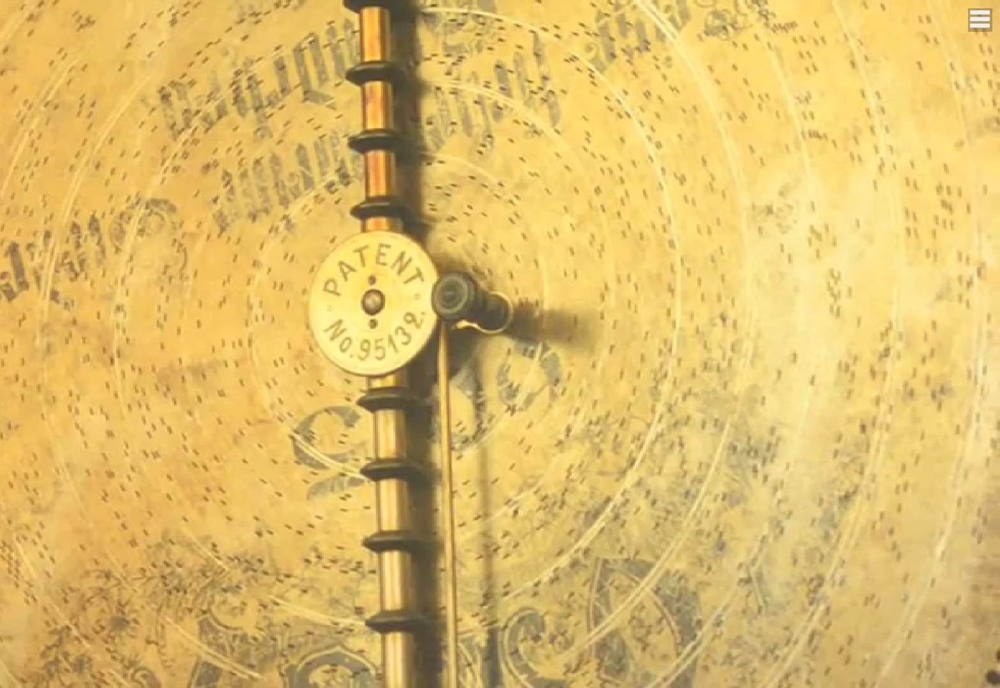
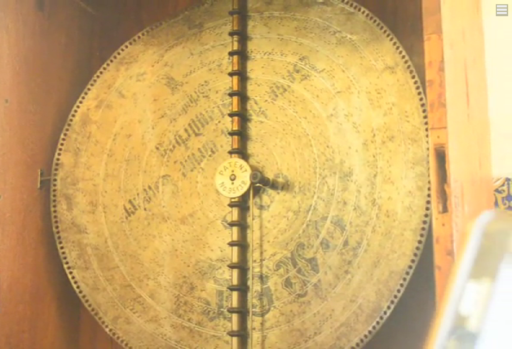

Alat Musik Komet

Komet Alat Musik dari Kota Siak Sri Indrapura
Peninggalan sejarah Indonesia sangatlah beragam. Salah satu yang menarik adalah Komet alat musik peninggalan kerajaan Kota Siak Sri Indrapura, Riau. Alat musik ini sejenis gramophone yang dibuat Jerman. Menariknya alat musik ini hanya ada dua di dunia, satu di Jerman dan satu di Kerajaan Siak.
Alat musik Komet ini didatangkan ke Siak, Riau pada tahun 1889 silam. hanya di Istana Siak lah yang bisa memainkan alat musik karya Bethoven, Strauss dan Mozart itu. Alat musik ini dibawa pada saat Sultan Hasyim melawat ke beberapa kerajaan. Hingga saat ini alat musik Komet masih bisa menghasilkan alunan musik yang begitu indah.
Piringan Hitamnya Gede Terbuat dari Baja
Untuk menghasilkan alunan musik, Komet ini dibantu dengan beberapa piringan hitam yang disimpan di laci bagian bawah. Piringan hitamnya pun berukuran besar dan terbuat dari baja. Disebutkan jika satu piringan hitam akan menghasilkan alunan musik dengan durasi sekitar 10 menit. Pengatur musik dan nadanya terletak pada bagian belakang piringan hitam yang berbentuk bintik-bintik.
Foto Alat Musik Komet
Foto 1
Foto 2
Sebagai kisah yang terukir dalam sejarah Kota Siak Sri Indrapura, Komet Alat Musik menjadi saksi bisu kemegahan kerajaan pada masa lalu. Dengan dua-satunya di dunia, alat musik ini menghadirkan harmoni indah karya Beethoven, Strauss, dan Mozart di Istana Siak, Riau. Melintasi zaman dan perjalanan sultan, Komet masih melantunkan alunan musik yang memesona hingga hari ini. Piringan hitamnya yang besar dan terbuat dari baja menjadi saksi bisu keanggunan dan ketangguhan alat musik ini. Sebuah peninggalan berharga yang memelihara kekayaan sejarah dan seni, menjaga pesona musik dari masa lalu yang tak terlupakan.